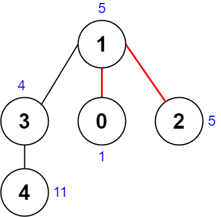
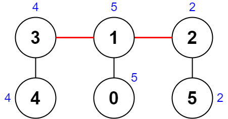

| Category | Difficulty | Likes | Dislikes |
|---|---|---|---|
| Algorithms | Hard | 806 | 46 |
google | facebook | amazon
There is an undirected connected tree with n nodes labeled from 0 to n - 1 and n - 1 edges.
You are given a 0-indexed integer array nums of length n where nums[i] represents the value of the ith node. You are also given a 2D integer array edges of length n - 1 where edges[i] = [ai, bi] indicates that there is an edge between nodes ai and bi in the tree.
Remove two distinct edges of the tree to form three connected components. For a pair of removed edges, the following steps are defined:
[4,5,7], [1,9], and [3,3,3]. The three XOR values are 4 ^ 5 ^ 7 = 6, 1 ^ 9 = 8, and 3 ^ 3 ^ 3 = 3. The largest XOR value is 8 and the smallest XOR value is 3. The score is then 8 - 3 = 5.Return the minimum score of any possible pair of edge removals on the given tree.
Example 1:

Input: nums = [1,5,5,4,11], edges = [[0,1],[1,2],[1,3],[3,4]]
Output: 9
Explanation: The diagram above shows a way to make a pair of removals.
- The 1st component has nodes [1,3,4] with values [5,4,11]. Its XOR value is 5 ^ 4 ^ 11 = 10.
- The 2nd component has node [0] with value [1]. Its XOR value is 1 = 1.
- The 3rd component has node [2] with value [5]. Its XOR value is 5 = 5.
The score is the difference between the largest and smallest XOR value which is 10 - 1 = 9.
It can be shown that no other pair of removals will obtain a smaller score than 9.Example 2:

Input: nums = [5,5,2,4,4,2], edges = [[0,1],[1,2],[5,2],[4,3],[1,3]]
Output: 0
Explanation: The diagram above shows a way to make a pair of removals.
- The 1st component has nodes [3,4] with values [4,4]. Its XOR value is 4 ^ 4 = 0.
- The 2nd component has nodes [1,0] with values [5,5]. Its XOR value is 5 ^ 5 = 0.
- The 3rd component has nodes [2,5] with values [2,2]. Its XOR value is 2 ^ 2 = 0.
The score is the difference between the largest and smallest XOR value which is 0 - 0 = 0.
We cannot obtain a smaller score than 0.
Constraints:
n == nums.length3 <= n <= 10001 <= nums[i] <= 108edges.length == n - 1edges[i].length == 20 <= ai, bi < nai != biedges represents a valid tree.